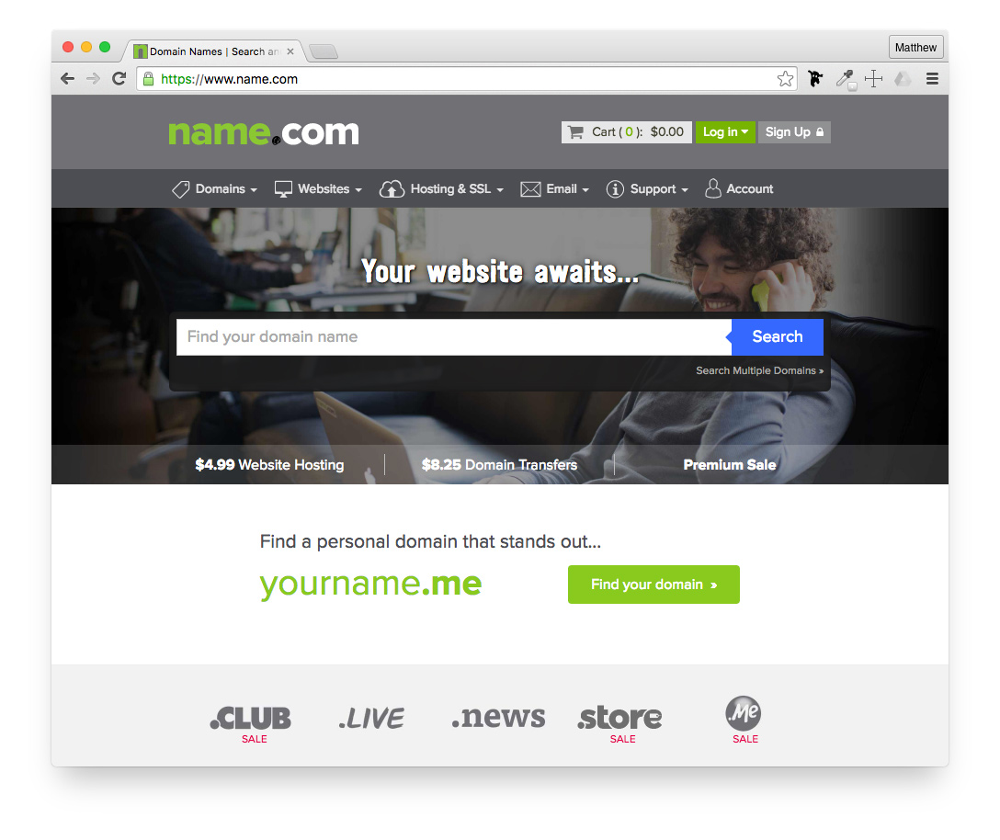

Creating an official GitHub URL
Having a GitHub page with the URL https://jennygalvanize.github.io/portfolio/ works, but http://www.jennygalvanize.com is far better. These lessons will show you how easy this process is.
There are three steps for setting up a custom domain name for your GitHub Pages:
Two of the most popular choices to purchase a domain name with is Name.com and GoDaddy.com. We often hear that Name.com has better customer support and easier web interface to use compared to Godaddy—plus, if you enroll into one of our part-time workshops, you'll be given a discount code for a domain name to use for free a few months with Name.com.
First, you'll need to purchase your domain name from this web site.

To add (or even remove) a custom domain for your GitHub pages web page, follow these directions:
On GitHub, navigate to your GitHub Pages site's repository.
Under your repository name, click Settings.
Under "Custom domain", add (or remove) your custom domain and click Save.
Typically, it is best to allow users to navigation to both the primary (http://jennygalvanize.com) site, as well as the subdomain (http://www.jennygalvanize.com).
Follow your DNS provider's instructions to create an ALIAS or ANAME record that points your apex domain to the GitHub Pages server at your default pages domain. Your DNS changes can take over a full day to update and the wait varies among DNS providers.